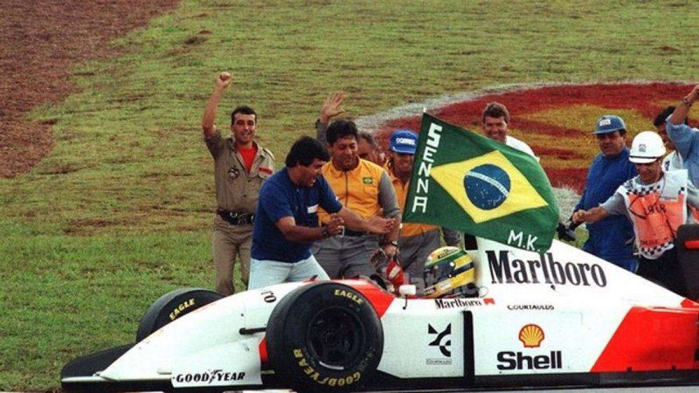
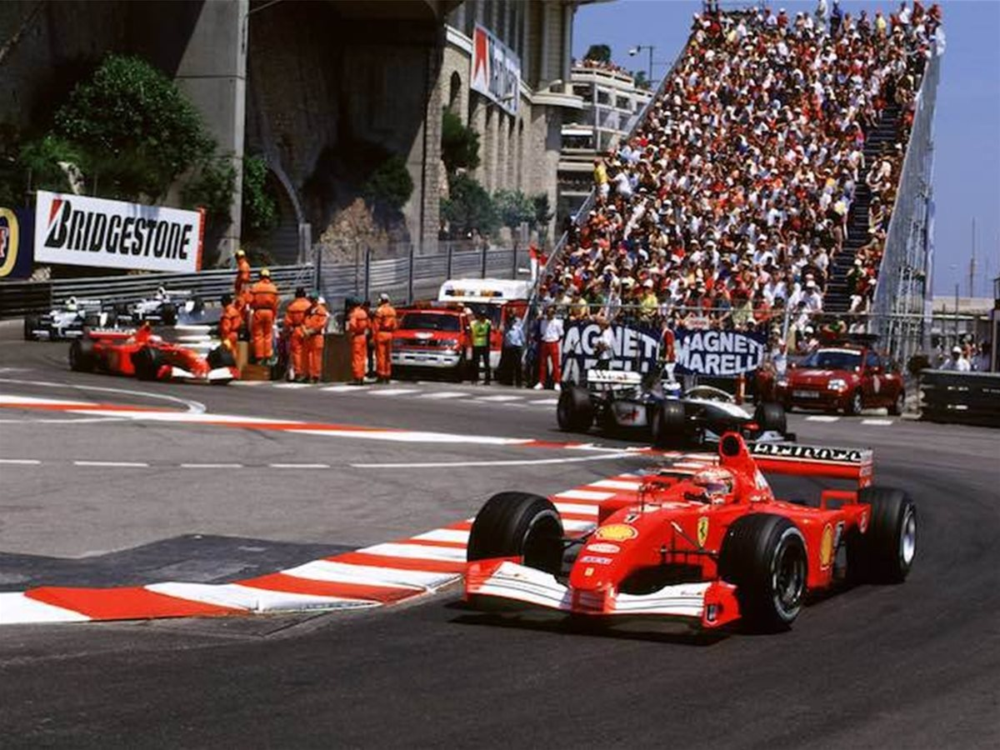

La Formula 1 es la maxima competicion del automovilismo internacional y, posiblemente, la disciplina de motor mas popular y prestigiosa del mundo. Su historia daria para escribir libros enteros, pero hoy te contamos algunos de sus hitos mas reseñables.
Los Grandes Premios tienen sus raices en las carreras automovilisticas surgidas en Francia en 1894. En un principio se trataba de eventos individuales, sin conexion entre si y organizadas en caminos de tierra. El numero de carreras consideradas Gran Premio se fue incrementando a lo largo de los primeros años del siglo XX, hasta alcanzar las 18 en el año 1934.
El nombre de la Formula 1 se refiere a un conjunto de reglas que todos los participantes y coches debian cumplir, y que originalmente se conocia simplemente como Formula. Los planes para un campeonato de pilotos de Formula 1 se empezaron a plantear a finales de la decada de 1930, pero se dejaron de lado con el inicio de la Segunda Guerra Mundial. En 1946, con el nacimiento de la FIA (Federacion Internacional del Automovil), se reanudo el proyecto, y en 1950 se unieron varios Grandes Premios para lanzar el primer campeonato de pilotos.
En mayo de 1950 se celebro en Silverstone la primera carrera de Formula 1. Ese año, solo siete de las veinte carreras de la temporada contaron para el titulo. Las carreras fuera de puntuacion para el campeonato continuarian hasta 1983, año en el que la organizacion paso a considerarlas no rentables por el aumento de los costes.

En los años 50, habia conductores que operaban por su cuenta y que compraban y conducian sus propios coches. Sin embargo, el campeonato estaba dominado por los principales fabricantes de antes de la guerra: Alfa Romeo, Ferrari, Maserati y Mercedes Benz. Aunque Giuseppe Farina gano el titulo inaugural, el piloto clave en la decada de 1950 fue Juan Manuel Fangio, que gano el campeonato en 1951, 1954, 1955, 1956 y 1957 con cinco fabricantes diferentes.
Los comienzos no fueron faciles. En la primera decada del campeonato murieron 13 pilotos. En 1952 y 1953 la falta de participantes hizo que algunas carreras se hicieran segun el reglamento de la Formula Dos, con Alberto Ascari ganando el campeonato en ambos años. De las 20 marcas que compitieron en 1950, la mayoria pronto se vieron obligadas a abandonar el mercado por el coste. Solo Ferrari ha competido desde el inicio.
En un principio, todos los coches eran de motor delantero. A finales de los años 50 Cooper introdujo un coche con motor trasero y en 1961 todos los fabricantes ya lo tenian en funcionamiento. Como un incentivo adicional para los equipos, se introdujo el campeonato de constructores en 1958.
La victoria de Mike Hawthorn en el campeonato de 1958 marco el comienzo de una era de dominio britanico. Entre Jim Clark, Jackie Stewart, John Surtees, Jack Brabham, Graham Hill y Denny Hulme, los pilotos britanicos y de la Commonwealth ganaron 10 campeonatos de pilotos y los equipos britanicos ganaron diez titulos de constructores entre 1962 y 1973. El iconico Racing Green Lotus britanico, con un revolucionario chasis monocasco de chapa de aluminio en lugar del tradicional diseño de chasis tubular, fue el coche dominante, y en 1968 el equipo rompio nuevas fronteras siendo el primero en llevar publicidad en sus coches.
Sin embargo, la seguridad seguia siendo una preocupacion: Stewart se retiro en la vispera de lo que habria sido su ultima carrera tras la muerte de su amigo intimo y compañero de equipo Francois Cevert en el Gran Premio de EE.UU. de 1973. En 1975 Fittipaldi (campeon en el 72 y el 74) se nego a tomar la salida en el Gran Premio de España, que se detuvo despues de 29 vueltas cuando un coche se estrello contra el publico, matando a cuatro espectadores. Niki Lauda gano con Ferrari seis de las primeras nueve carreras en 1976 antes de que un terrible accidente en el Gran Premio de Alemania le dejara con quemaduras tan severas que no se esperaba que pudiera sobrevivir.
En terminos de innovacion, tambien en este periodo fue Lotus la marca que abrio el camino. Primero con la introduccion en 1978 de la aerodinamica de efecto suelo (usando faldones laterales y diseño de bajos para dar al coche mas agarre) que proporcionaba una enorme fuerza aerodinamica y un gran aumento de la velocidad en las curvas. Y despues con el desarrollo de su sistema de suspension activa, que aparecio por primera vez en 1982. Gracias (en parte) al primero de ellos, Mario Andretti se hizo con el campeonato en el 78. Sin embargo, ese año se vio nuevamente empañado por la tragedia, ya que su compañero de equipo Ronnie Peterson moriria tras un accidente en Monza. Este hecho marcaria el principio del fin para el legendario equipo Lotus, que no volvio a ganar ningun campeonato.
En cuanto a la gestion de la competicion, a principios de los 70, Bernie Ecclestone reorganizo los derechos comerciales de la Formula 1, convirtiendo el deporte en un negocio global. En 1971 compro el equipo Brabham, con lo que obtuvo un puesto en la Asociacion de Constructores de Formula 1 (FOCA) y en 1978 se convirtio en su presidente. Hasta entonces, los propietarios de los circuitos controlaban los ingresos de los equipos, negociando con cada uno individualmente. Ecclestone convencio a los equipos de su valor y del valor de negociar como una unidad coordinada. En 1979 se formo FISA (Federation Internationale du Sport Automobile) y casi inmediatamente se enfrento con FOCA por los ingresos y las regulaciones. La situacion se deterioro hasta el punto de que FOCA amenazo con organizar un campeonato alternativo y llego a boicotear alguna carrera. El resultado fue el Acuerdo Concorde de 1981, con el que se consiguio una cierta estabilidad. En 1987, la FOCA cedio la gestion de los derechos de television a la Formula One Management, bajo la direccion de Ecclestone.
En 1983 Nelson Piquet gano con Ferrari el segundo de sus tres titulos, y la victoria de Lauda en 1984 supuso el inicio de un periodo de dominio de McLaren, ganando el titulo en 6 de los 8 años posteriores con Alain Prost y Ayrton Senna. El cenit del equipo llego en 1988, cuando ganaron 15 de las 16 carreras del campeonato.
Para combatir la fenomenal potencia de los coches, se introdujeron determinadas restricciones y se prohibieron por completo los turbocompresores en 1989. En la decada de 1980 ya habian comenzado a surgir las ayudas electronicas para el conductor (de nuevo Lotus estaba a la vanguardia) y a principios de la decada de 1990 aparecieron las cajas de cambios semiautomaticas y el control de traccion.
McLaren y Williams continuaron gobernando el paddock en la decada de los noventa (con 8 campeonatos entre ambos). La rivalidad entre Prost y Senna termino en 1993 con la jubilacion del primero. En 1994 Senna murio en Imola. Su muerte marco un hito, ya que supuso un aumento considerable de las normas de seguridad: desde entonces, ningun piloto moriria al volante de un coche de Formula 1 hasta la muerte de Bianchi en 2015. La FIA trato de introducir medidas para ralentizar los coches y mejorar la seguridad.
Los altos costes de la Formula 1 ensancharon el abismo entre los cuatro grandes y los mas pequeños. Entre 1990 y 2008, 28 equipos entraron y salieron del campeonato. Desde 1999 hasta 2008 el gran dominador fue Ferrari, conquistando en esas 10 temporadas 8 titulos de pilotos y 8 de constructores. La figura mas dominante durante este tiempo fue Michael Schumacher, que gano 5 titulos consecutivos (para un total de 7 en su carrera).
En la ultima decada, los equipos Red Bull y Mercedes se han repartido los campeonatos, con 4 titulos cada uno, gracias fundamentalmente al aleman Sebastian Vettel (Red Bull) y al britanico Lewis Hamilton (Mercedes).
Debido a la bajada de audiencia por la baja competitividad de las ultimas temporadas (monopolizadas como decimos por Red Bull y Mercedes), la FIA y los equipos acordaron modificar el reglamento tecnico para la temporada 2017.
La empresa estadounidense Liberty Media controla desde 2016 el Formula One Group. Bernie Ecclestone continuo como director ejecutivo hasta el 23 de enero de 2017, dia en el que fue cesado como CEO de la empresa, tras 39 años al mando del negocio de la Formula 1.
En cuanto a los pilotos españoles, hay que destacar a Fernando Alonso, campeon del mundo con Renault en 2005 y 2006, y subcampeon con Ferrari en 2010, 2012 y 2013. Ademas, desde su fundacion han participado en la Formula 1 los siguientes pilotos españoles: Francisco Godia (1951, 1954-1958), Juan Jover (1951), Alfonso de Portago (1956-1957), Antonio Creus (1960), Alex Soler Roig (1970-1972), Emilio de Villota (1976-1978, 1982), Emilio Zapico (1976), Adrian Campos (1987-1988), Luis Perez Sala (1988-1989), Pedro de la Rosa (1999-2002, 2005-2006, 2010-2012), Marc Gene (1999-2000, 2003-2004), Jaime Alguersuari (2009-2011) y Roberto Merhi (2015).
Y, por supuesto, Carlos Sainz, que debuto con la escuderia Toro Rosso en el Gran Premio de Australia de 2015, tras ganar las World Series en 2014. Y en 2019 empezo su andadura en McLaren, tras pasar tambien por el equipo Renault.